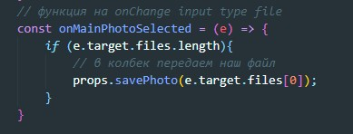
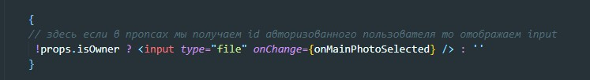

Для примера загрузим фотографию на сервер
Далее через пропсы прокидываем нашу thunk до компоненты, которая отрисовывает input type file. На этот input вешаем слушатель onChange и по событию вызываем callback savePhoto
Так выглядит input type file
